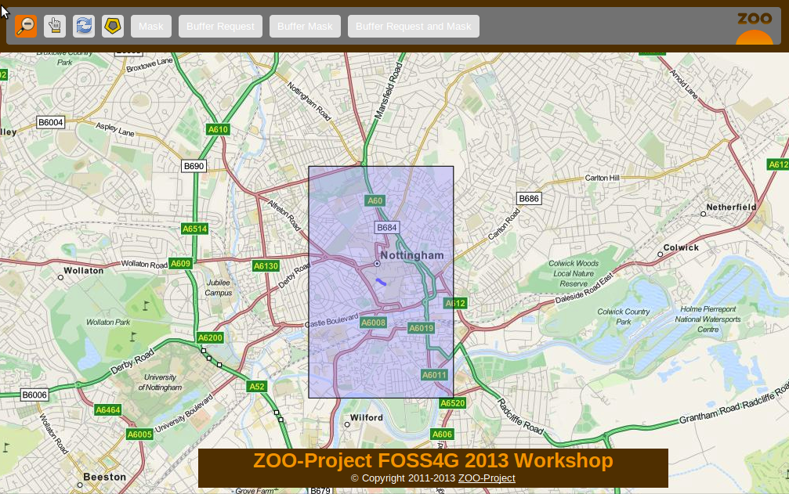
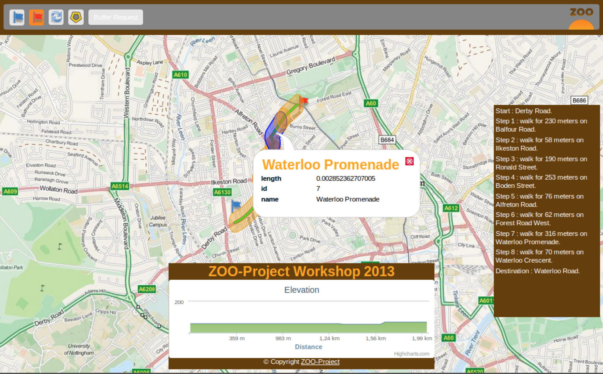

Playing with buildign blocks - Creating JavaScript Web Services¶
Table of Contents
Introduction¶
This section illustrate how you can use JavaScript on the server-side to chain services together to build new ones. You will create a ZOO Services Provider using the services you seen before and the WFS server using the ZOO-API. The final goal is to query all POIs included in a buffer around a feature and to highlight them using a mask around this buffer. The following screenshot show you the expected result:

For the routing interface result should look like this:

You can decompose the result above in two different ones: the mask around the
buffer and the points included in the buffer. So you will create two different
Services: one called BufferMask and another one called BufferRequest.
But before implementing any JavaScript Service, you will get an overview of how to use ZOO-API from your ZOO-Project installation in the next section.
As before, you first create a new directory to store files for your new Services Provider:
mkdir -p ~/zoo-ws2013/jschains/cgi-env/
ZOO-API Overview¶
ZOO-API and ZOO-Kernel JavaScript support make you able to run services implemented in JavaScript on the server side. JavaScript is a popular programing language but mostly used on the client side. Let say from a browser, but here it is a bit different.
To support JavaScript language ZOO-Kernel use the
SpiderMonkey API to create a
javascript runtime environment from which it will load your JS file then extract
the function corresponding to the service to run it using the prefilled
parameters. The JavaScript runtime environment created by the ZOO-Kernel
depend on your setup. If you placed the ZOO-api.js and ZOO-proj4js.js in
the same directory as your ZOO-Kernel it means that your environment will
contains ZOO-API and Proj4js will be loaded before your service. In such case you can access to the Classes defined in the JavaScript ZOO-API
to manipulate geographic data, for more informations please refer to the
ZOO-API Documentation.
Even if it can be useful to run JavaScript on the server side, you should
remember that some basic JavaScript functions you are familiar with does not
exist or get a different behavior. For instance the simple alert
function will display messages in apache error logs rather than in a window when
used from a browser. The alert function can be used as follow:
alert("My alert message");
There is no XMLHttpRequest available in the JavaScript evironement your service
will run into. Hopefully, the ZOO-Kernel expose a C function to the JavaScript
world named: JSRequest. This function make you able from your JavaScript
services to call other WPS services (locally or remotelly) or other kind OGC
services such as WFS. When you are using the ZOO-API it is possible to call
Services using a ZOO.Process instance [1], to parse WPS Responses using
ZOO.Format.WPS
(cf. ref).
As for Python services you already seen in previous sections, the functions
corresponding to a Service should take three arguments: conf, inputs and
outputs [2]. Nevertheless, as the ZOO-Kernel is not able to access the
values modified [3] by the Service code, rather than returning an integer as
in Python, here you’ll need to return both the integer value representing the
Status of your Service in a JavaScript Object and the resulting outputs
values as an Object [4]. You can see in the following an example of a JavaScript
Service code:
function SampleService(conf,inputs,outputs){
var resultValue=someComputation(inputs);
return
{
result: ZOO.SERVICE_SUCCEEDED,
outputs: { "Result": { "mimeType": "application/json", "value": resultValue } }
};
}
Before starting to implement the Services we will need to get our final BufferRequest service, let start with a simplier one.
The Mask Service¶
In this section you will learn how to create your first JavaScript service which will simply return a rectangular mask around a selected feature. To build this mask you will use the Buffer service to create a buffer big enough around a selected geometry to cover a significant part of your map. You can see the expected result in the following screenshot:
{kind=link}
As before, you will first start by writting the ZCFG, then you will write the JavaScript source code and finish by publishing your Services Provider.
The ZCFG¶
Open the file named
~/zoo-ws2013/jschains/cgi-env/Mask.zcfg
with your favorite text editor and add the following content:
1 2 3 4 5 6 7 8 9 10 11 12 13 14 15 16 17 18 19 20 21 22 23 24 25 26 27 28 29 30 31 | [Mask]
Title = Compute mask
Abstract = Compute mask around a geometry
processVersion = 1
storeSupported = true
statusSupported = true
serviceProvider = foss4gws.js
serviceType = JS
<DataInputs>
[InputData]
Title = The feature
Abstract = The feature to run the service with
minOccurs = 1
maxOccurs = 1
<ComplexData>
<Default>
mimeType = text/xml
encoding = utf-8
</Default>
</ComplexData>
</DataInputs>
<DataOutputs>
[Result]
Title = The resulting feature
Abstract = The feature created by the service.
<ComplexOutput>
<Default>
mimeType = application/json
</Default>
</ComplexOutput>
</DataOutputs>
|
Here you simply define one default ComplexData for both inputData and
Result: a GML and a GeoJSON respectively [5].
The JavaScript service¶
As you will have to request the Buffer service many times from your service, you
will first define a Buffer function as follow. It uses the ZOO.Process
to request the Buffer service you seen in the previous section.
Open a file named
~/zoo-ws2013/jschains/cgi-env/foss4gws.js and
add the following content:
1 2 3 4 5 6 7 8 9 10 11 12 13 14 15 16 17 18 19 20 21 22 23 | var zoo_url='http://localhost/cgi-bin/zoo_loader.cgi';
var mapfile="/var/www/zoows2013-demo/map/w2013_1.map";
var mapserv_url="http://localhost/cgi-bin/mapserv?map="+mapfile;
function Buffer(inputData,bDist){
// Create all required ZOO.formats
var fJ=new ZOO.Format.JSON();
var fGJ=new ZOO.Format.GeoJSON();
var fWPS=new ZOO.Format.WPS();
// Pass the value as json
var myInputs = {
InputPolygon: { type: 'complex', value: fGJ.write(inputData), mimeType: "application/json"},
BufferDistance: {type: 'float', "value": bDist }
};
var myOutputs= { Result: { type: 'RawDataOutput', "mimeType": "application/json" } };
var myProcess = new ZOO.Process(zoo_url,'BufferPy');
var myExecuteResult=myProcess.Execute(myInputs,myOutputs);
return fGJ.read(myExecuteResult);
}
|
From line 12 to 15, you give a GeoJSON string (created from inputData) for
InputPolygon and, on line 14, you set the BufferDistance value to bDist.
On line 16, you define Result as a ResponseDocument, so you’ll have to parse the
WPS response using the ZOO.Format.WPS, on line 21.
On line 17, you create a ZOO.Process instance providing the ZOO-Kernel url and the Service name. Then, on line 18, you run the request passing inputs and outputs previously defined (from line 12 to 15).
Now, you get your Buffer function, it is time to create your first JavaScript
service. So, edit your foss4gws.js file you created before and add the following content:
1 2 3 4 5 6 7 8 9 10 11 12 13 14 15 16 17 18 19 20 21 22 23 24 25 26 27 28 | function Mask(conf,inputs,outputs){
// Create all required ZOO.formats
var fGML=new ZOO.Format.GML();
var fGJ=new ZOO.Format.GeoJSON();
// Read the input GML
var inputData=fGML.read(inputs["InputData"]["value"]);
// Compute Buffer
var bufferResultAsJSON=Buffer(inputData,0.015);
// Create the Buffer result BBOX and store its geometry in a ZOO.Feature
var bbox = new ZOO.Bounds();
var bounds=bufferResultAsJSON[0].geometry.getVertices();
for(var t in bounds){
bbox.extend(bounds[t]);
}
var finalG=bbox.toGeometry();
var result=new ZOO.Feature(finalG,{"name": "Result1000"});
// Return the created feature
return {
result: ZOO.SERVICE_SUCCEEDED,
outputs: { "Result": { mimeType: "application/json", value: fGJ.write(result) } }
};
}
|
Publish and use your Service¶
Now you get both your ZCFG and your service code ready, you need to deploy your new Services Provider using the following command:
cp ~/zoo-ws2013/jschains/cgi-env/* /usr/lib/cgi-bin
Now you are ready to use your JavaScript service by loading the following url, click on a street then click on the “Mask” button.
BufferMask Service¶
In this section you will implement a simple JavaScript service which will be able create a hole in the mask you created in previous section. This service will be used to highlight the buffer zone around a selected fature. You get a preview of the expected result in the following screenshot:

The ZCFG¶
Open the file named
~/zoo-ws2013/jschains/cgi-env/BufferMask.zcfg
with your favorite text editor and copy / paste the following content:
1 2 3 4 5 6 7 8 9 10 11 12 13 14 15 16 17 18 19 20 21 22 23 24 25 26 27 28 29 30 31 | [BufferMask]
Title = Compute buffer mask
Abstract = Compute buffer mask around a geometry
processVersion = 1
storeSupported = true
statusSupported = true
serviceProvider = foss4gws.js
serviceType = JS
<DataInputs>
[InputData]
Title = The feature
Abstract = The feature to run the service with
minOccurs = 1
maxOccurs = 1
<ComplexData>
<Default>
mimeType = text/xml
encoding = utf-8
</Default>
</ComplexData>
</DataInputs>
<DataOutputs>
[Result]
Title = The resulting feature
Abstract = The feature created by the service.
<ComplexOutput>
<Default>
mimeType = application/json
</Default>
</ComplexOutput>
</DataOutputs>
|
This ZCFG is similar to the previous one. Please, refer to comments in the previous section for more informations.
The JavaScript service¶
In this Service you will use same source code (until line 19) you used in the previous section. Indeed, you should compute the Mask as you did before then compute Buffer for creating a hole in the mask (on line 22) to run the Difference service (from line 25 to 40).
1 2 3 4 5 6 7 8 9 10 11 12 13 14 15 16 17 18 19 20 21 22 23 24 25 26 27 28 29 30 31 32 33 34 35 36 37 38 39 40 41 42 43 44 45 46 47 48 49 | function BufferMask(conf,inputs,outputs){
// Create all required ZOO.formats
var fGML=new ZOO.Format.GML();
var fGJ=new ZOO.Format.GeoJSON();
// Read the input GML
var inputData=fGML.read(inputs["InputData"]["value"]);
// Compute Buffer
var bufferResultAsJSON=Buffer(inputData,0.015);
// Create the Buffer result BBOX
var bbox = new ZOO.Bounds();
var bounds=bufferResultAsJSON[0].geometry.getVertices();
for(var t in bounds){
bbox.extend(bounds[t]);
}
var finalG=bbox.toGeometry();
// Compute Buffer standard buffer
var bufferResultAsJSON=Buffer(inputData,0.0015);
// Request Difference service using Buffer result and features in the BBOX
var result=new ZOO.Feature(finalG,{"name": "Result1000"});
var myProcess2 = new ZOO.Process(zoo_url,'DifferencePy');
var myInputs2 = {
InputEntity1: {
type: 'complex',
value: fGJ.write(finalG),
mimeType: "application/json"
},
InputEntity2: {
type: 'complex',
value: fGJ.write(bufferResultAsJSON),
mimeType: "application/json"
}
};
var myOutputs2= {Result: {type: 'RawDataOutput', mimeType: "application/json" } };
var myExecuteResult4=myProcess2.Execute(myInputs2,myOutputs2);
// Return the bbox
var result=new ZOO.Feature(finalG,{"name": "Result1000"});
return {
result: ZOO.SERVICE_SUCCEEDED,
outputs: { "Result": {mimeType: "application/json", value: myExecuteResult4 } }
};
}
|
Publish and use your Service¶
Now, you can publish your service as you did before. To use your service, please use the following url.
BufferRequest service¶
In this section, you will create a new Service: BufferRequest which will request
POIs included in the Buffer around a selected feature [6]. You will use the poi
layer served as WFS through your local mapserver installation. You can see in the
following screenshot the expected result:

The ZCFG¶
Open the file named
~/zoo-ws2013/jschains/cgi-env/BufferRequest.zcfg
with your favorite text editor and copy / paste the following content:
1 2 3 4 5 6 7 8 9 10 11 12 13 14 15 16 17 18 19 20 21 22 23 24 25 26 27 28 29 30 31 | [BufferRequest]
Title = Compute buffer request
Abstract = Compute buffer request around a geometry
processVersion = 1
storeSupported = true
statusSupported = true
serviceProvider = foss4gws.js
serviceType = JS
<DataInputs>
[InputData]
Title = The feature
Abstract = The feature to run the service with
minOccurs = 1
maxOccurs = 1
<ComplexData>
<Default>
mimeType = text/xml
encoding = utf-8
</Default>
</ComplexData>
</DataInputs>
<DataOutputs>
[Result]
Title = The resulting feature
Abstract = The feature created by the service.
<ComplexOutput>
<Default>
mimeType = application/json
</Default>
</ComplexOutput>
</DataOutputs>
|
The JavaScript code¶
As in the previous Service, you will compute a buffer around the input feature. But then
you will request POIs available in the Buffer extent using a WFS request to use them to
run Intersection service using the initial Buffer. The WFS request is useful to limit
the number of points to use when requesting the Intersection Service.
1 2 3 4 5 6 7 8 9 10 11 12 13 14 15 16 17 18 19 20 21 22 23 24 25 26 27 28 29 30 31 32 33 34 35 36 37 38 39 40 41 42 43 44 45 | function BufferRequest(conf,inputs,outputs){
// Create all required ZOO.formats
var fGJ=new ZOO.Format.GeoJSON();
var fGML=new ZOO.Format.GML();
// Read the input GML
var inputData=fGML.read(inputs["InputData"]["value"]);
// Compute Buffer
var bufferResultAsJSON=Buffer(inputData,0.0015);
// Create the Buffer result BBOX
var bbox = new ZOO.Bounds();
var bounds=bufferResultAsJSON[0].geometry.getVertices();
for(var t in bounds){
bbox.extend(bounds[t]);
}
// Request Intersection service using Buffer result and WFS request using the
// BBOX
var myProcess2 = new ZOO.Process(zoo_url,'Intersection');
var req="&version=1.0.0&request=GetFeature&typename=poi1";
req+="&SRS=EPSG:4326&BBOX=";
var myInputs2 = {
InputEntity1: {
type: 'complex',
value: fGJ.write(bufferResultAsJSON),
mimeType: "application/json"
},
InputEntity2: {
type: 'complex',
xlink: mapserv_url+req+bbox.left+","+bbox.bottom+","+bbox.right+","+bbox.top,
mimeType: "text/xml"
}
};
var myOutputs2= {Result: { type: 'RawDataOutput', "mimeType": "application/json" } };
var myExecuteResult4=myProcess2.Execute(myInputs2,myOutputs2);
return {
result: ZOO.SERVICE_SUCCEEDED,
outputs: [ {name:"Result", mimeType: "application/json", value: myExecuteResult4} ]
};
}
|
Warning
to take advantage of the ZOO-Kernel cache system, you directly use the WFS
request as xlink:href rather than value for InputEntity2 (from line 31 to 34) and use text/xml mimeType
(on line 40). Indeed, the ZOO-API doesn’t use the internal cache mechanisms.
Publish and use your Service¶
Now, you can publish your service as you did before. To use your service, please use the following url.
Note
You can click on “Buffer Request and Mask” to get the same result as presented in the initial screenshot.
Add Union into the chain¶
As you can see in the following screenshot, when using the Buffer service using a feature collection containing more than one geometry, the result is made of multiple geometries. So, running Buffer service on the routing interface will result in multiple buffer:
{kind=link}
So, to get the same result as you got when selecting a single
road, you should use Union of geometry (input or the one outputed by the
Buffer Service). As you are using the JavaScript ZOO-API, you can
simply update the Buffer JavaScript function you defined earlier, to
first call the Union of each geometry avaible in a feature collection
prior to request (or after requesting) the Buffer Service. Hopefully,
there is already this Python Service available, its name is
UnionOne1, so you just need to add it in your Service chain.
Here is the final code for the Buffer JavaScript function:
1 2 3 4 5 6 7 8 9 10 11 12 13 14 15 16 17 18 19 20 21 22 23 24 25 26 27 28 | function Buffer(inputData,bDist){
// Create all required ZOO.formats
var fJ=new ZOO.Format.JSON();
var fGJ=new ZOO.Format.GeoJSON();
var fWPS=new ZOO.Format.WPS();
// Call the UnionOne1 Service
var myInputs0 = {
InputPolygon: { type: 'complex', value: fGJ.write(inputData), mimeType: "application/json"},
BufferDistance: {type: 'float', "value": bDist }
};
var myOutputs0= { Result: { type: 'RawDataOutput', "mimeType": "application/json" } };
var myProcess0 = new ZOO.Process(zoo_url,'UnionOne1');
var myExecuteResult0=myProcess0.Execute(myInputs0,myOutputs0);
// Call the BufferPy Service
var myInputs = {
InputPolygon: { type: 'complex', value: myExecuteResult0, mimeType: "application/json"},
BufferDistance: {type: 'float', "value": bDist }
};
var myOutputs= { Result: { type: 'RawDataOutput', "mimeType": "application/json" } };
var myProcess = new ZOO.Process(zoo_url,'BufferPy');
var myExecuteResult=myProcess.Execute(myInputs,myOutputs);
return fGJ.read(myExecuteResult);
}
|
Conclusion¶
After understanding how basic Geometric Operation Services works, here you built step by step new JavaScript services which reuse the previous ones and combine them in different ways. This was achieved using the ZOO-API, composed by C functions exposed by the ZOO-Kernel to the JavaScript services runtime environement and the JS files which can be optionally installed.
Footnotes
| [1] | The ZOO.Process class uses JSRequest (cf. ref). You will get example
of use later. |
| [2] | So conf, inputs and outputs are simple JavaScript objects, similar
to the Python dictionaries used in the previous section. |
| [3] | Such as conf, inputs and outputs. |
| [4] | You can also return a conf Object if you get any informations updated from your JavaScript service (such as cookie for instance) |
| [5] | Using one of the available ZOO.formats you are also able to support various
ComplexData for both input and output of the service. To simplify the
presentation here, you will use only this default ones. |
| [6] | So in the hole you created in the previous section. |